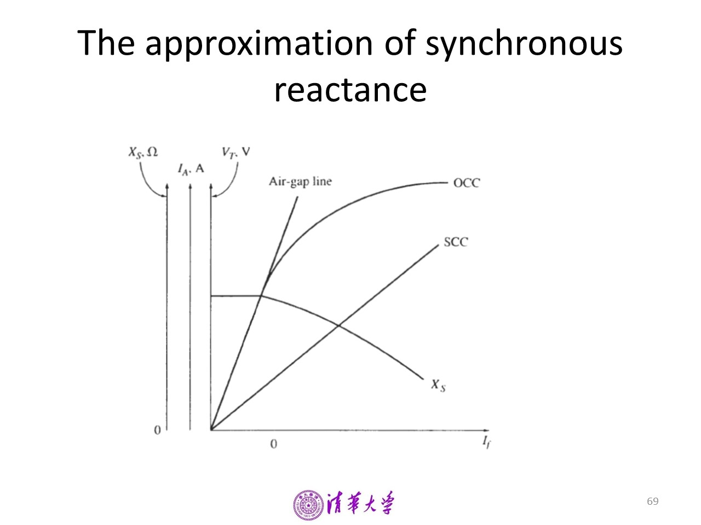
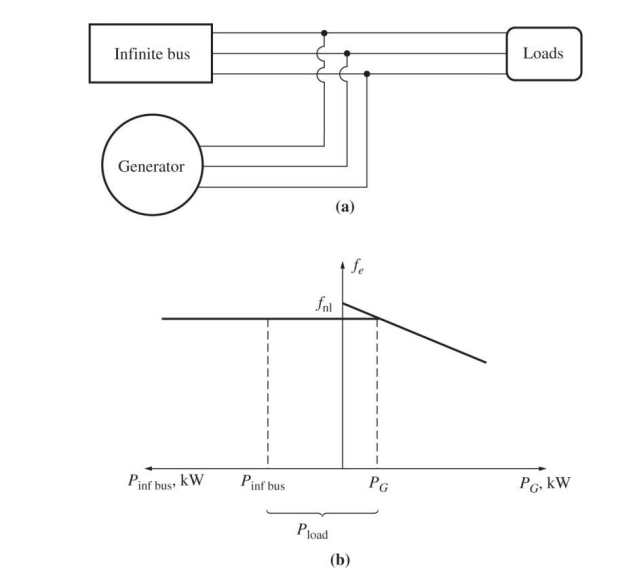
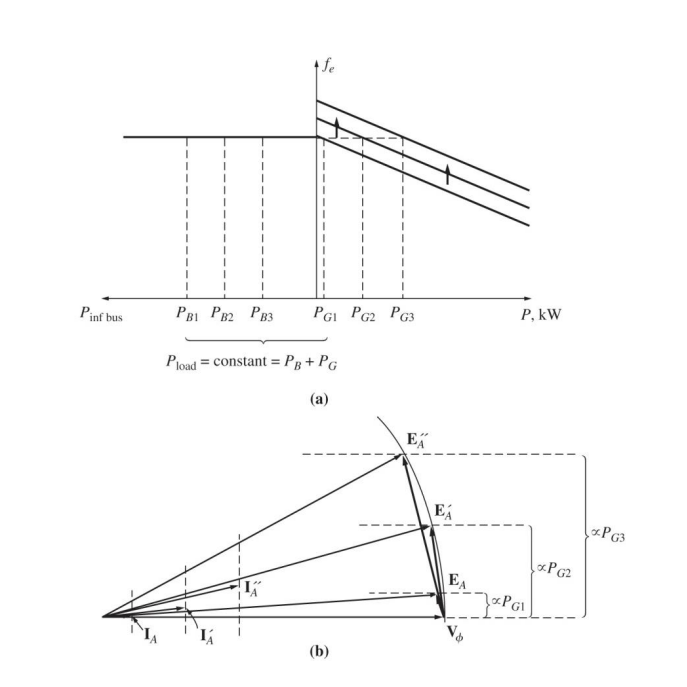
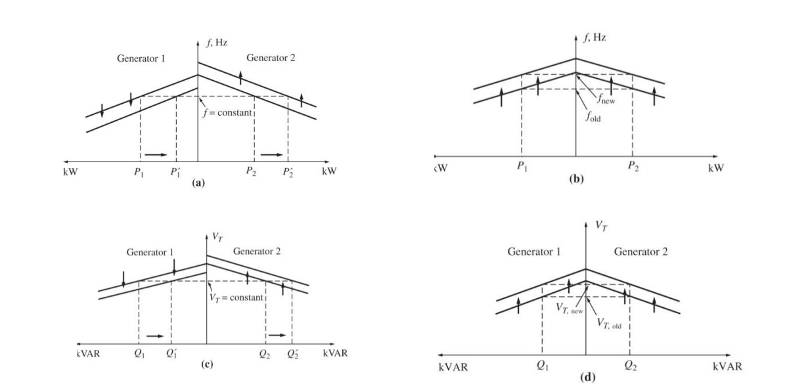

同步电机参数测定
同步电机的参数测试¶
关于参数测试，我们知道总共有如下几种：
- Open circuit test —— 测量内电压\(E_0\)
- Short circuit test —— 测量同步电抗\(X_s\) 或直轴同步电抗\(X_d\) 的不饱和值
- Zero Power Factor test —— 测量漏电抗\(X_\sigma\)
- DC test —— 定子电阻
- Slip Test —— 交轴同步电抗\(X_q\)
而1,2可以绘制出三条特性曲线，分别是
- 空载特性曲线\(E(I_f)\)
- 短路特性曲线\(I_k(I_f)\)
- 气隙导出电压特性曲线\(E_0(I_f)\) 如下图所示：
具体来说，我们通过上图对同步电机的基本参数进行测量。
回顾同步电机的基本参数：
- 同步电抗\(X_s\)
- 内电压\(E_0\)
- 定子电阻\(R\)
- 短路比\(K\)
同步电抗计算¶
直轴同步电抗也可以由此求出。 值得注意的问题是，这里测量的是不饱和值，短路情况下电枢反应磁动势为直轴去磁，合成的总的气隙磁动势很小，电机磁路处于非饱和状态。饱和值利用 Open Circuit 的结果即可获得。
内电压\(E_0\)¶
事实上，测量出气隙导出电压特性曲线\(E(I_f)\)就已经得到了\(E_0\)
短路比¶
短路比$ K $ 对应于空载额定电压的励磁电流\(I_f\) 下三相稳态短路时的短路电流\(I_k\) 与额定电流\(I_0\) 之比, 即
漏电抗 \(X_\sigma\)¶
需要使用零功率因数负载特性曲线，求所谓的\(Potier\)电抗\(X_p\) 。事实上，\(X_p\neq X_\sigma\),但是在一般情况下，负载一般是感性，磁极铁芯有额外饱和现象，与零功率因数负载试验类似，在这种情况下\(X_p\)代替\(X_\sigma\)更准确。
同步电机并联运行¶
鉴于老师讲了一些课本上不存在的东西，我找了点资料，自己整理了一下。
并联运行的要求:
- Must have the same voltage magnitude.
- The phase angles of the two a phases must be the same.
- The generators must have the same phase sequences.
- The frequency of the oncoming generator must be slightly higher than the frequency of the running generator.
前三条都在保证两者输出电压一致，第四条要求将要并联上的电机频率要稍高于正在运行的电机
同步发电机依赖于原动机，原动机输出功率随频率变化关系如下
其中\(f_{nl}\)是原动机机械频率， \(f_{sys}\) 是系统的工作频率(电频率), \(S_p\)是曲线斜率。
由于电网的负载很大，则输出电压和频率基本恒定，那么对于整个发电机，f-P和V-Q特性都是水平线，如下所示： 
当在恒定的励磁电流下改变调速器的工作点，会导致输出功率的变化。 
总结¶
- 输出电压和频率被系统控制
- 调速器工作点控制发电机的输出功率
- 励磁电流控制无功功率
以下四张图分别展示了一些调整特性。
图 a 展示了通过分别调整两个发电机的调速器工作点可以在不改变系统频率的条件下改变输出功率。
图 b 则展示了不改变功率分配(两个发电机发电功率之比)调整系统频率
图 c 表示不改变输出电压的情况下改变无功功率
图 d 展示了不改变无功功率的情况下改变输出电压

总之：
- The system is constrained in that the total power supplied by the two generators together must equal the total amount consumed by the load. The \(f_{sys}\) is not constrained to be constant.
- To adjust the real power (P) sharing between generators without changing \(f_{sys}\), simultaneously increase the governor set point on one generator while decreasing the governor set point on the other. The machine whose governor set point was increased will assume (undertake) more of the load.
- To adjust \(f{sys}\) without changing the real power-sharing, simultaneously increase or decrease both generators’ governor set points.